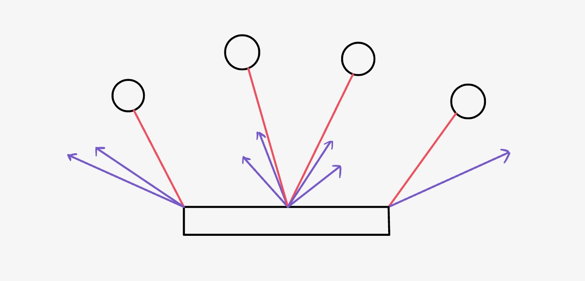
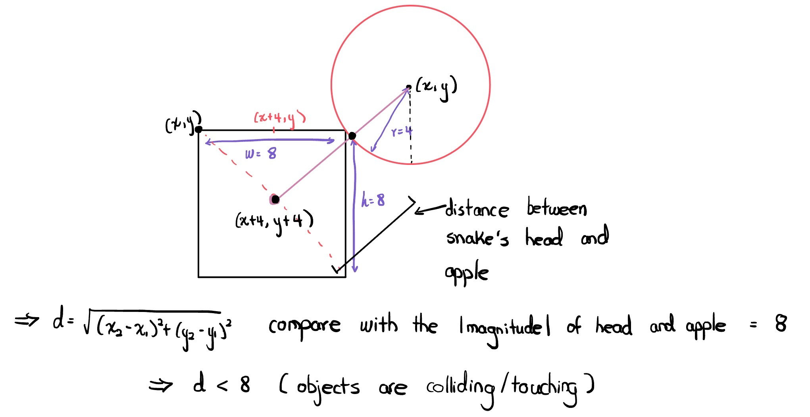

High Level Design
Rationale and Sources of Our Project Idea
It has always been our dream to make our own game console, since we are both video game lovers. While we were originally planning to do it as a personal project one day, we thought we could put our plan into action by applying what we have learned from ECE 4760. For our choice of games, we decided to implement the retro games that we used to play when we were young. This was a compromise between reality and our dream, as we realized that there were limitations in which games we can finish implementing by the deadline.
Logical Structure
Main Menu
The main menu screen gets displayed when we first power our console. The player can choose which game to play by using the joystick and the blue arcade button. The game that the player is selecting is indicated by a cyan colored arrow next to the game title. After finishing one game, the player can press the bottom button to come back to the main menu.
Pong
Our version of Pong is a one-player game in which the player can move the paddle to the left or right using the joystick. There is a rectangular border around the screen on which the ball gets reflected, and the paddle cannot go beyond either side of the border as well. When the paddle hits the ball, the score increases by 10, and the ball bounces off until it hits the border. The player starts with three lives, and loses one life whenever the paddle misses the ball. The speed at which the ball travels does not increase as the score goes up or the time goes by; rather, it gets faster if the ball hits either side of the paddle, and returns to the default speed when the ball hits the middle of the paddle.
Snake
The snake has a head, marked with blue color for convenience, and a green body that gets longer when it eats an apple. The apple is displayed as a red circle, and randomly reappears on the screen once the snake eats one. The snake can be moved by the joystick in four directions: up, down, left and right.The player only has one life in this game, and the game ends when the head of the snake runs into either its body or the wall (screen edges). The score gets incremented by 10 whenever the snake eats an apple. The score is not displayed on the screen all the time, as it is in Pong, but it is displayed after the game is over.
Memory
Memory is a simple memory tester game, where the player has to input the same sequence of arrows that the computer has randomly generated and displayed with the joystick. When the player correctly inputs the answer, it moves onto the next level, where the number of arrows corresponds to the level. In other words, four random arrows are displayed if the current level is 4. Each level does not depend on the previous or next level, as a new random sequence gets generated for each level. We had our friends and Professor Adams try out this game, and the highest level that one has reached so far is only 7.
Background Math
Pong

What makes the game pong fun is the speed of the ball. Since the ball speed changes depending on which part of the paddle hits the ball, the level of difficulty of our Pong depends on the player themselves. These rebound angles allow the ball’s next path to be unpredictable, making the game more enjoyable. If the ball hits the middle of the paddle, the speed of the ball after it bounces off will stay at the default velocity of 1. The velocity of the ball is controlled by an equation that computes the current position of the paddle to determine whether to increment the ball speed or not. In the diagram above, the purple lines indicate the velocity of the ball, at angles at which the ball gets reflected.
Snake

For snake, we used the formula for the distance between two points to detect whether the snake “ate” the apple. When the distance between the center of the snake head and the center of the apple is less than 8 pixels, the snake’s head must be touching some part of the apple, no matter which direction the snake is facing. We set the standard distance to be 8 pixels, as the radius of our apple is 4 pixels long and the width and height of the snake’s head are both 8 pixels long. The calculation for this geometry is shown in the diagram above.
Memory
We did not have mathematical calculations in our implementation of the Memory game, except for the timing/delays that controlled the speed at which each arrow is displayed. The joystick’s interrupt configurations played an important role as well, because the right sensitivity of the joystick was required for the player to correctly input the answer.
Hardware/Software Tradeoffs
Using threads in C allowed us to yield in microseconds, which is a non-blocking delay that makes programming more time-efficient as it does not waste as many clock cycles. We realized this effect in our first version of the code when we attempted to use multithreading, before we transitioned to a state machine. A hardware tradeoff is that we powered the blue arcade button’s LED by the same batteries as what the Pico was being powered with. The LED does not consume too much energy, but it is still constantly draining the batteries.
Existing Patents, Copyrights, and Trademarks
Although we looked at existing resources online to understand the logic of Pong and Snake, we built all three games from scratch, so we believe that we do not face any copyrights issues. The patents for Pong and Snake both expired, and moreover, we are not using our project to make profit. This is also discussed on our Conclusions page.